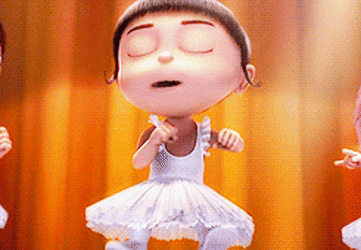

Directora Ejecutiva de Abrazos Fuertes y Avistamiento de Unicornios
Mi descripción más real
Soy una experta en encontrar la magia en los lugares más raros (como laboratorios de villanos). Mi superpoder es derretir corazones de hielo con una sola mirada. Si buscas a alguien que siempre vea el lado rosa de la vida y que pueda dormir plácidamente mientras un rayo encoge la luna, ¡soy yo!.
- 📞 Contacto: + 555 01-UNICORNIO
- 📝 Formación: Academia Gru de Artes y Galletas y grado en gestion de criaturas amarillas
- 🚀 Experiencia: Directora de Abrazos Fuertes
- ⭐ Curiosidad: Experta en ver el lado rosa de la vida siempre.
- ✨ ¡Saber más sobre mí!
Experiencia Laboral

Líder de Escuadrón de Ternura
Hogar Gru / Villa Villano
Mis Logros y Experiencia:
- Negociación Crítica: Logré que un señor con nariz puntiaguda y planes de dominación mundial me comprara galletas.
- Gestión de Criaturas Amarillas: Supervisión de más de 500 Minions. Especialista en evitar el caos absoluto.
- Control de Calidad de Dulces: Catadora oficial de caramelos, chicles y cualquier cosa con azúcar.
- Logro Histórico: Captura de un "Unicornio de una sola oreja" (técnicamente era una cabra, pero shhh).
Resiliencia Extrema: Capacidad de seguir sonriendo incluso cuando me entero de que los unicornios no son lo que pensaba.